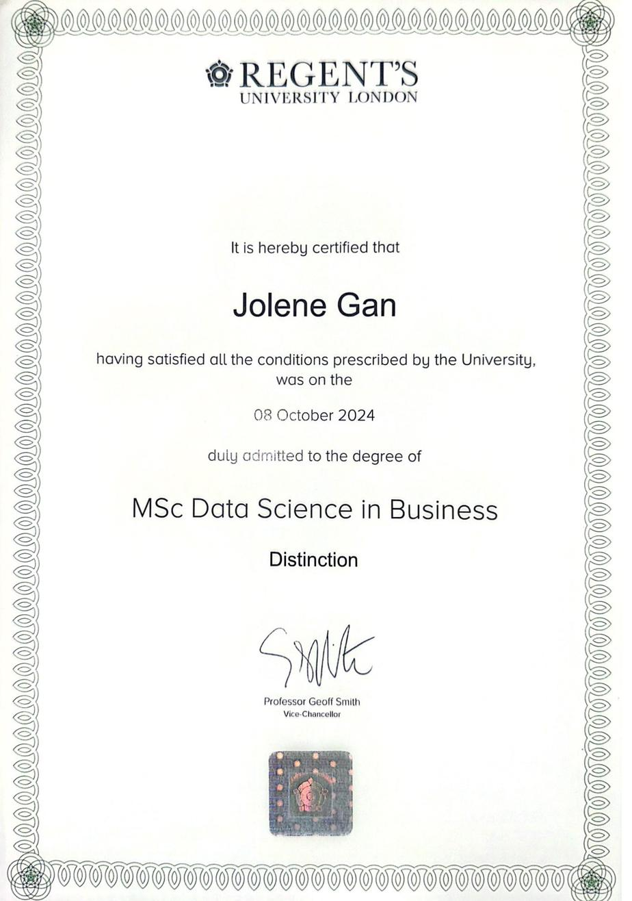
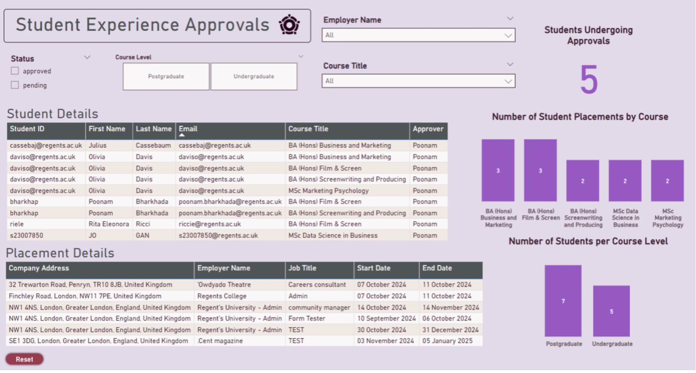
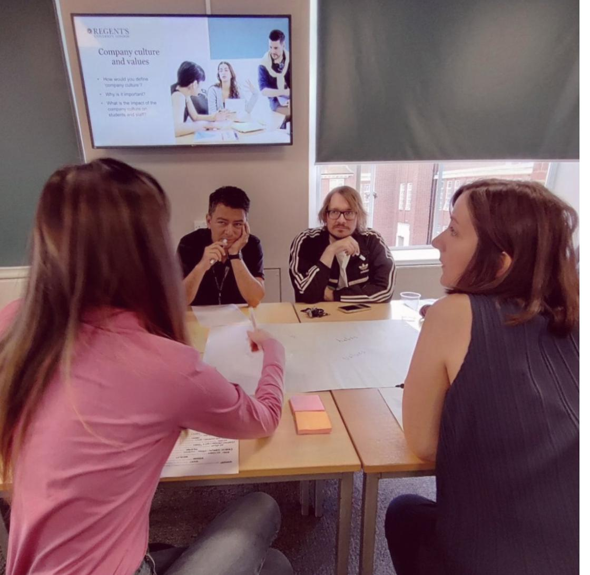
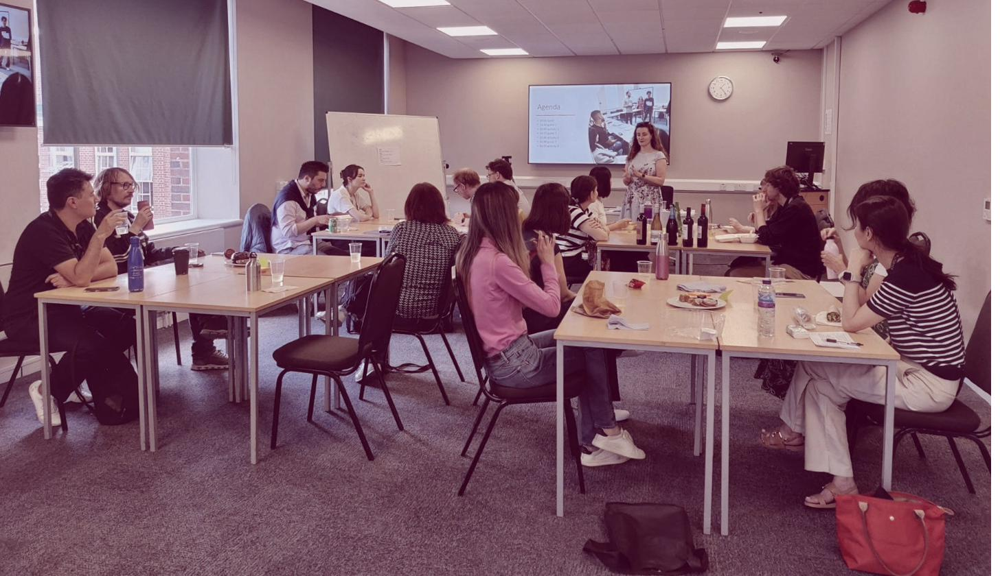
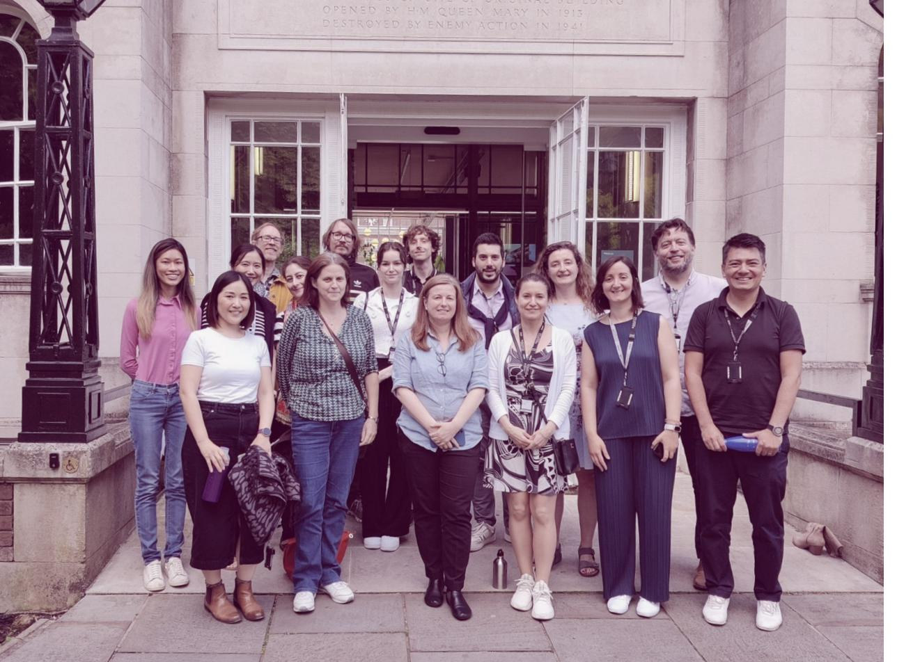
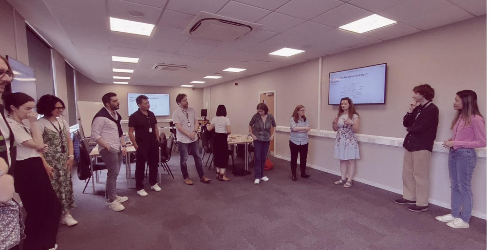
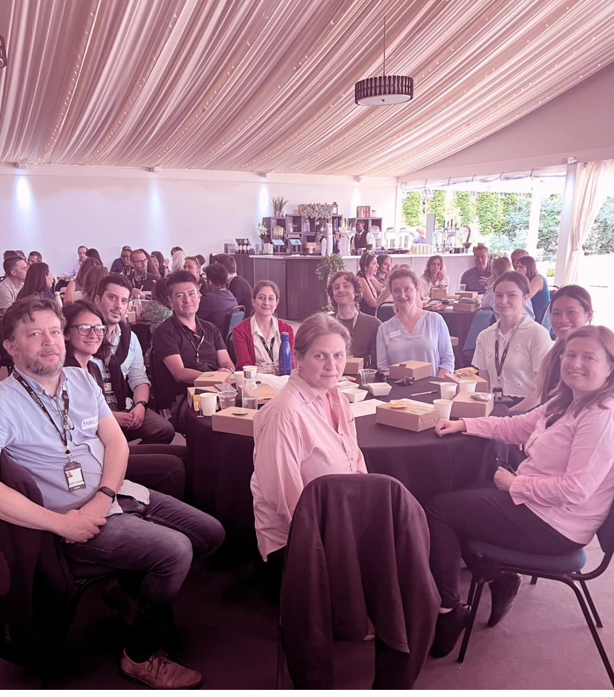
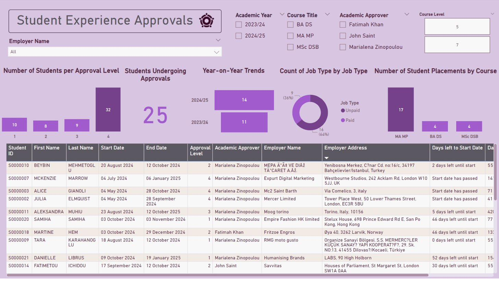
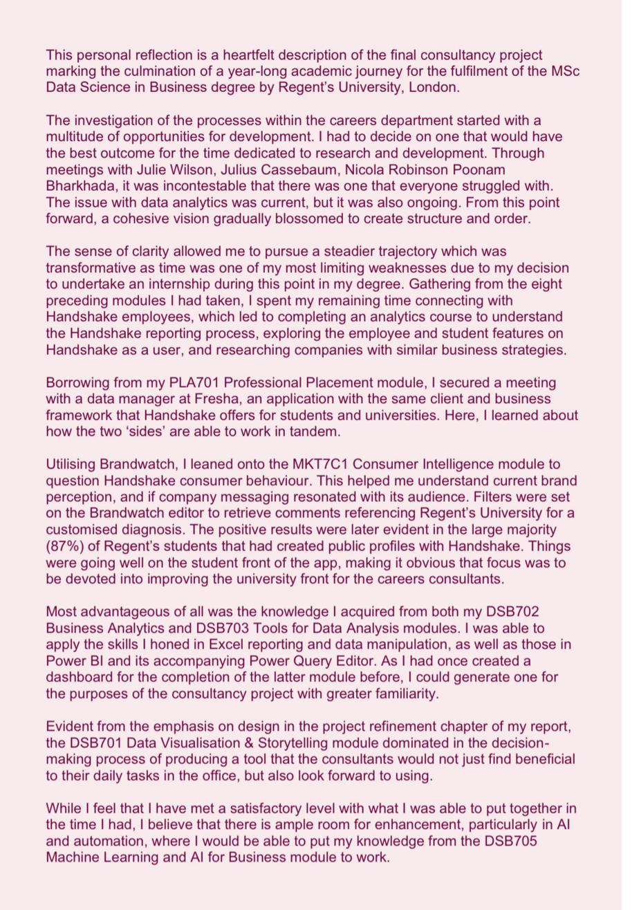
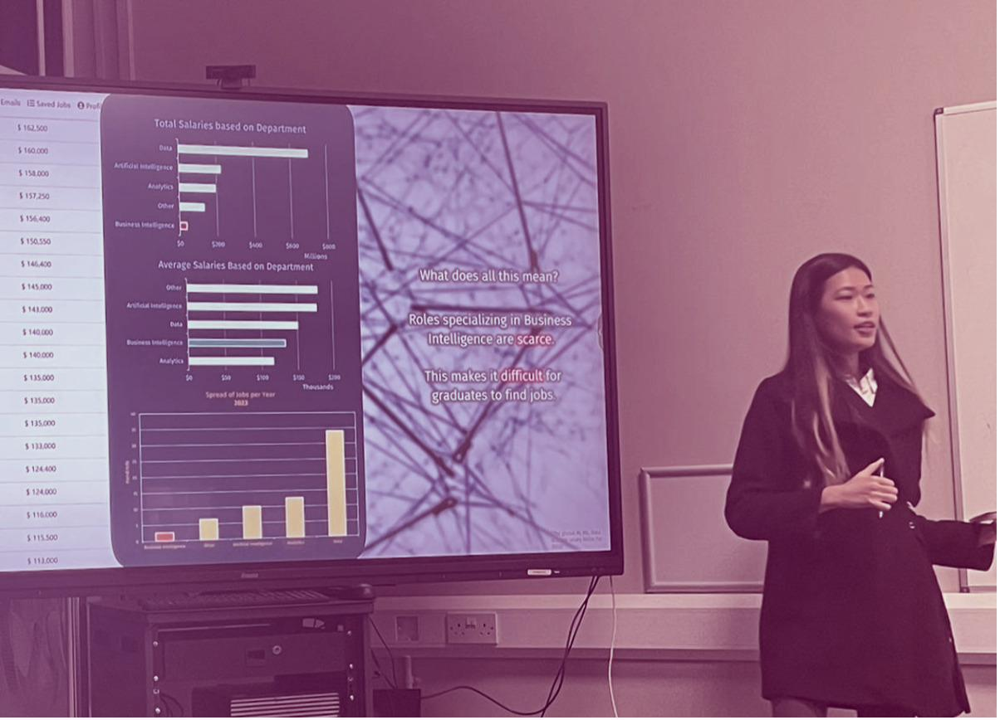

02 / Portfolio
Work &
Credentials.
Professional, academic, and independent projects alongside formal credentials.
Credentials

MSc Data Science in Business
Regent's University London, 2024
Awarded with distinction. SAS Academy accredited. 2x conference invited speaker. Textbook contributor for Data Science for Predictive UX Design (forthcoming, 2026).
BA in Communication
SUNY University at Buffalo, 2021
Relevant coursework: Statistics for Social Sciences, Risk Communication.
Diploma in Business Information Systems
Republic Polytechnic, 2018
Recipient of Edusave Good Progress Award. Coursework: Database Systems, Business Intelligence, Systems Analysis and Design.

Certificate of Achievement: Data Analysis using SAS JMP
SAS Academy, issued via Regent's University London, 2024
Demonstrates proficiency in using SAS software for statistical analysis. Covers comparing means, analysis of variance, categorical analysis, correlation and regression, multiple linear regression, and logistic regression.

Data Science by KNIME
Accredited by KNIME, facilitated on LinkedIn Learning
Six-course learning path covering: Data Science Fundamentals, Low Code/No-Code Data Literacy, Introduction to AI, Classification Modelling, Generative AI and LLMs, and Non-Technical Skills of Effective Data Scientists.
Professional
Projects completed as part of paid employment or competitive processes.
UK National Student Survey (NSS) Performance Dashboard
Time-boxed stakeholder dashboard using public-sector survey data, developed and presented as part of a competitive hiring process. End-to-end raw data transformation into a structured, interactive Power BI dashboard.
applied skills
- ETL: data type correction, null handling, Power Query transformation, data restructuring with custom columns
- Troubleshooting Excel source file for Power BI compatibility
- Relative performance logic using conditional columns
- Conditional formatting for interpretability
Student Placements Power BI Dashboard
Designed and implemented a Power BI dashboard for the Alumni Community, Careers Network and Development (ACCND) department to visualise student placement data. Enabled real-time monitoring of placement progress, approval statuses, and UKVI compliance, contributing to a projected 6-fold improvement in UKVI audit response speed.
Data sourced from Handshake (student experience forms), cleaned for data type issues, restructured via Excel, and visualised in Power BI with drill-down to individual student records, employer details, and approval levels. A handover document was produced for the incoming senior data scientist covering data flow, dashboard architecture, and future guidance.
applied skills
- Diagnosed and resolved data type issues in Handshake survey template causing null values in pre-Oct 2024 records
- Built dashboard with real-time filters for students starting or ending placements within two weeks
- Drill-down to individual student placement details, approval statuses, and employer information
- Produced full handover documentation for a senior data scientist covering data flow, architecture, and future guidance

Excel-to-InDesign Semi-Automation Pipeline
Independently designed and built a semi-automated Excel-to-CSV pipeline integrated with InDesign Data Merge, reducing manual report production time by approximately 55 to 60%. Applied across 130+ legal data reports.
Data Visualisation Innovation
Drove a data visualisation overhaul within the product development department, improving the core product to save approximately 50% of manual reporting time and increase data legibility. Expertise subsequently applied across sales and editorial teams.
REPT Administration Data Consultancy
Paid internship consultancy project for the role of Data Administration Intern. Delivered a data-driven report titled "Mastering REPT Administration: A Data-Driven Approach", identifying operational weaknesses and recommending process improvements projecting a ~200% efficiency increase.
Responsibilities included reviewing and maintaining prospective student data, timely analysis of test demand and invigilator supply, database management, certificate generation, and email technical support across 600+ test candidates.
applied skills
- Data visualisation and data science consultancy
- Database management: reviewing and maintaining student records across 600+ candidates
- Timely analysis of test demand and supply of invigilators
- Certificate generation, email technical support, and professional communication





Academic
Projects completed during the MSc Data Science in Business programme at Regent's University London, ordered most recent first.
Data Science Consultancy (Capstone)
Final project for the completion of the MSc Data Science in Business degree. Delivered a full data science consultancy for Regent's University's Careers Department, producing an 8,000-word report, a Power BI dashboard, a 20-minute presentation, and a manipulated Excel spreadsheet. The project centred on Handshake analytics, consumer intelligence via Brandwatch, and actionable recommendations for the department's data infrastructure.
work produced
- 8,000-word consultancy report with data-led findings and strategic recommendations
- Interactive Power BI dashboard for the Careers Department
- 20-minute formal presentation delivered to stakeholders
- Consumer intelligence analysis via Brandwatch on Handshake brand perception at Regent's


AI Implementation Proposal for CRISPR Therapeutics
A conceptual proposal enhancing the patient journey for CRISPR Therapeutics' gene editing therapies using AI and machine learning. Selected CRISPR Therapeutics as the subject company, mapped their customer journey, conducted a SWOT analysis, and proposed four AI-driven implementation strategies: AI-trained consultants, automated patient eligibility assessments, automated scheduling, and a chatbot assistant for logistics (CRIS-PRTAL).
applied skills
- Biotech industry analysis: CRISPR Therapeutics strategy overview and competitive landscape
- Customer journey mapping and SWOT analysis for a gene editing company
- Four AI implementation proposals: training, eligibility ML crawl, scheduling automation, and logistics chatbot
- Bioethical implications analysis and RISEN framework prompting
Categorical Analysis on Multiple Sclerosis Predictors
Statistical analysis identifying categorical predictors of multiple sclerosis diagnosis using a clinical dataset of 271 observations from a single hospital in Mexico. Applied logistic regression, decision trees, and chi-square tests in SAS JMP to surface significant predictive variables. Findings were communicated through a 37-slide data storytelling presentation featuring branded visualisations and a narrative clinical interpretation.
key findings
- Patients with 3 initial symptoms were 11 times more likely to be diagnosed with MS than those with 1 symptom
- Positive LLSSEP (nerve signal transmission) was associated with 2.8x higher MS likelihood
- Prediction profiler identified a high-vulnerability patient profile across 8 categorical variables
Joix: Building a Mental Health Chatbot
Pair assignment with Felix Jonathan Poll. Designed and built Joix, a chatbot on Landbot.io connecting mental health patients to appropriate care as an alternative to emergency hotlines. The name combines "Jo" from Jolene and "ix" from Felix, with a nod to the French word "joie" (joy), reflecting the chatbot's compassionate design goal.
Addresses the intersection of telephobia (anxiety around phone calls), overburdened emergency lines, and the need for low-threshold mental health support. Joix routes users between non-urgent and urgent pathways, providing immediate local NHS hotline numbers based on postcode input.
Analysing the Data Science Job Market
Industry data analysis exploring trends, skill demand, and salary patterns across the data science job market. Findings were visualised and presented as a structured data story combining industry research with visual communication using Power BI and PowerPoint.
applied skills
- Industry data analysis: sourcing, structuring, and interpreting real market data
- Data visualisation: translating findings into clear, accessible visual formats
- Data storytelling: building a narrative connecting data to actionable insights

Home Equity Company Client Base Case Study Analysis
Financial data analytics case study examining 3,364 clients of a home equity credit line company across two quarters. The business goal was to minimise future loan defaults by building a decision-making model for categorising applicants by default likelihood. Applied end-to-end ETL in Excel Power Query, merging three datasets (Home Equity Q1, Q2, and job categories), then surfaced five key strategic insights covering debt-to-income ratio, property value, job tenure, and derogatory credit reports.
applied skills
- ETL: appending Q1 and Q2 datasets, merging job category lookup table via foreign key, data type correction and standardisation
- Excel functions: IFS for extending short-form labels, conditional formatting for interactive occupational category analysis
- Five strategic insights surfaced from broad exploratory analysis across geographic, demographic, and financial variables
Independent
Guided and self-directed projects completed outside of formal education or employment, ordered most recent first.
Sales Performance KPI Dashboard
End-to-end Power BI report using a star-schema model, custom date hierarchies, and DAX measures to analyse orders, revenue, and profit across time, stores, and product categories. Built as a trend analysis and interactive KPI dashboard guided project.
applied skills
- Time-based aggregation and custom date hierarchies
- Relational modelling with star schema
- Column profiling and statistics tools (table view)
- Debugging data with Replace Values tool
- Exploring key metrics: orders, revenue, and profit by time, store, and category
Airbnb Listing Analysis
Python-based exploratory data analysis of Airbnb listings, examining pricing patterns, host distribution, and occupancy trends. Applied pandas for data cleaning and preparation, and produced visualisations using Matplotlib and Seaborn.
applied skills
- Data cleaning and preparation with the pandas library
- Time-series analysis and .groupby operations for trend analysis
- Exploring pricing, host distribution, and occupancy patterns
- Visualising insights: line charts, horizontal bar plots, and dual-axis charts
KNIME Data Analytics Platform Workflows
Practical workflow projects completed as part of the Low Code/No-Code Data Literacy course (Basic to Advanced) for the Data Science Professional Certificate. Submitted workflows are publicly available on the KNIME Community Hub.
applied skills
- Building analytics workflows from raw data to visualisation output
- Joining tables and aggregating data across multiple sources
- Data cleaning, transformation, and workflow documentation
Additional independent projects to be added as they are completed.